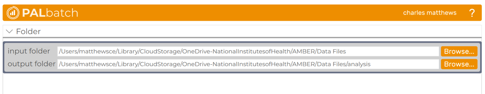
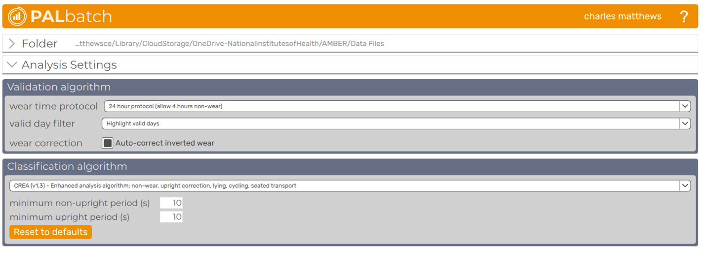
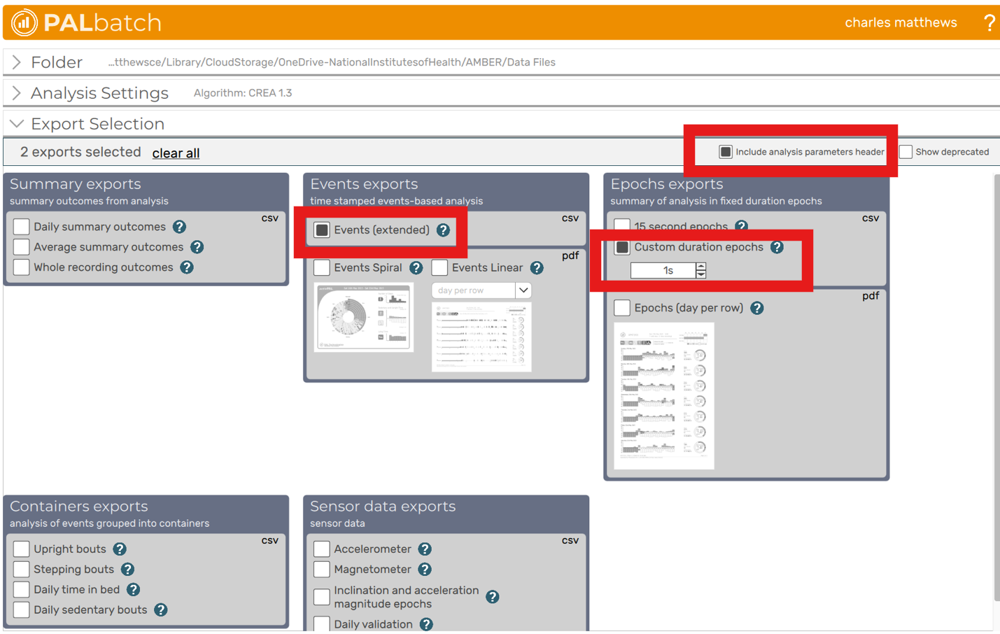

Purpose: Describe the variables for meta data and ground truth format for studies contributing data to the WAVES analysis. Designed to align with analysis plan below.
Of note, the expectation is for WAVES studies to map their existing labeled data to this codebook, or process their reference data following instructions listed here, where possible. The expectation is not to relabel data for this analysis. In the excel appendix, studies should provide their labels, operational definitions and mappings.
Analysis Plan - Aim 1
Performance evaluation of three core metrics (sedentary time, step counting, moderate-vigorous physical activity) compared to a primary reference measure video recorded direct observation collected for a fixed amount of time, at least 1-hour hours within a free-living environment (i.e., naturalistic conditions, not laboratory or scripted).
Identify primary outcome of interest and propose a priori sensitivity analyses to examine accuracy across different domains and movement that are important for public health and/or may have a unique movement signal that should be considered.
- Sedentary TIme
- *Total sedentary time: Comparison of algorithms and ground-truth across all labeled data in final datasets.
- Broad domain: Stratified by 5-class consistent with GPAQ where possible (household, occupation, travel, leisure, other)
- Sedentary types: Stratified by 4-class: non-sedentary, sitting/reclining, lying, sedentary driving.
- Step Counting
- *Total steps: Comparison of algorithms and ground-truth across all labeled data in final datasets.
- Broad domain: Stratified by 5-class consistent with GPAQ where possible (household, occupation, travel, leisure, other).
- Whole-body movement: Stratified by 5-class (sedentary, mixed movement, walking, running, biking).
- Moderate-vigorous physical activity (MVPA)
- *Total MVPA: Comparison of algorithms and ground-truth across all labeled data in final datasets.
- Broad domain: Stratified by 5-class consistent with GPAQ where possible (household, occupation, travel, leisure, other)
- Whole-body movement: Stratified by 5-class (sedentary, mixed movement, walking, running, biking).
*Indicates primary analysis
Analysis Plan – Aim 2
Performance evaluation of three core metrics (sedentary time, step counting, MVPA) compared to a field-based secondary reference measure collected over one or more 24-hour periods in free-living conditions.
Study Requirements:
Protocol that includes minimum of 16-hour wear protocol for wrist worn device and field-based reference measure.
Simultaneous raw wrist-worn device AND a reference measure traceable to a primary reference method with acceptable accuracy and precision in field-based testing
Metadata
Notes:
- • Variables indicated as required must be included for a study’s data to be used in this analysis.
Data Dictionary
| variable | definition | type | levels/examples | specific labels/notes | missingness |
|---|---|---|---|---|---|
| study | Study identifier | character (nominal) | ACT24 FLAC PALS CAPTURE24 |
Has to be the same for every single participant. | none (required for each included file) |
| subject | Unique participant identifier used to link observation data with device data. | alphanumeric | 1001 001 102 42 |
Used to link with device and reference data. Preferably numeric but if letters were also used to identify participants, that is also okay. |
none (required) |
| age | Age of participant in years | numeric | - | round to years | allowed (missing value = NA) |
| bmi | Participant’s BMI (kg/m2) | numeric | - | - | allowed |
| gender | Participant’s gender | character (nominal) |
M F OTH |
Male Female Non-binary or any other categories |
allowed |
| device | Wrist-worn device that was used in this study | character (nominal) |
AG3X AXIV GA |
ActiGraph GT3X+ Axivity Geneactiv |
none (required) |
| sampling | Sampling frequency of device in Hz | numeric | - | Value in Hz that data was set to sample | allowed |
| location | Wear location for device (non-dominant or dominant wrist) | character (nominal) |
dom non_dom |
dominant non_dominant |
none (required) |
Example
| study | subject | age | bmi | gender | device | sampling | location |
|---|---|---|---|---|---|---|---|
| ACT24 | 101 | 21 | 23.4 | F | AG3X | 30 | non_dom |
Video-Recorded Direct Observation
Notes:
Reference measure for sedentary time, step counts and MVPA.
Row unit: one record per 1-second epoch of direct observation.
Variables listed as required must be provided for the study’s data to be included in the analysis.
-
intensity3_do and intensity4_do are MET-based classifications and should be internally consistent:
- “mvpa” in intensity3_do corresponds to “moderate” or “vigorous” in intensity4_do.
-
Sedtype_do provides a sedentary subtype classification and should align with:
posture_do = “sedentary”
intensity_do = “sedentary”
“non-sed” in Sedtype_do corresponds to all non-sedentary posture/intensity combinations.
A study must have sedentary time, MVPA or steps labeled in a way consistent with operational definitions to be included in the analysis.
The study does not need to have all three outcomes to be included. If an outcome is missing, the variable should still be included with either NAs or left completely empty.
Data Dictionary
| variable | definition | type | levels/examples | labels/notes | missingness |
|---|---|---|---|---|---|
| study | Study identifier | character (nominal) | ACT24 FLAC |
Has to be the same for every single participant. | none (required for each included file) |
| subject | Unique participant identifier | alphanumeric | - | Used to link with device data. Preferrably numeric but if letters were also used to identify participants, that is also okay. | none (required) |
| observation | Observation session identifier | numeric (count) | - | If a participant is only observed once, then default to 1 | none (required) |
| datetime | Timestamp of observation in ISO 8601 format | POSIXct | 1990-01-01T18:36:10Z | Timestamp in coordinated universal time (UTC), “YYYY-mm-ddTHH:MM:SSZ” format | none (required) |
| date | Local calendar date at the observation site | date | - | In year-month-day format (i.e. YYYY-MM-DD) | none (required) |
| time | Local wall-clock time at the observation site | character | - | In 24-hour hour:minute:second format (i.e. HH:MM:SS) | none (required) |
| domain_do | Behavioral domain classification | character (nominal) | leisure | Discretionary time activities including social activities, sports, fitness, recreation, and screen-based leisure activities | allowed (treated as non-codable) |
| household | Personal care, housework, lawn and garden work, exterior maintenance | ||||
| transportation | Traveling to and from places (e.g., work, shopping, place of worship). Includes driving or riding in a car, public motorized transport (bus, train), and active transport | ||||
| occupation | Work or school-related activities including paid or unpaid work, study, and seeking employment | ||||
| other | Behaviors not categorized above (e.g., purchasing goods, volunteering, other uncategorized activities) | ||||
| non-codable | Behaviors that were not able to be observed or not be reliably labeled due to circumstances | ||||
| posture_do | Observed posture or movement type | character (nominal) | sedentary | Sitting or lying | allowed |
| mixed_movement | Includes standing, stand_move, sport_movement, stretching, crouching/kneeling/squatting, ascending/descending stairs | ||||
| walking | L-R-L-R pattern including walking with load | ||||
| running | Running | ||||
| biking | Cycling | ||||
| sedtype_do | Sedentary subtype classification | character (nominal) | non_sed | All non-sedentary/active behaviors | allowed |
| sitting | sitting/reclining not in a motor vehicle as a driver/passenger | ||||
| lying | lying | ||||
| vehicle | Driving a personal motor vehicle or as a passenger in any land-based motor vehicle | ||||
| intensity3_do | 3-level intensity classification based on METs | character (ordinal) | sedentary | sedentary posture with low energy expenditure | allowed |
| light | non sedentary posture 1.50 - 2.99 METS | ||||
| mvpa | 3.00+ METS | ||||
| intensity4_do | 4-level intensity classification based on METs | character (ordinal) | sedentary | sedentary posture with low energy expenditure | allowed |
| light | non sedentary posture 1.50 - 2.99 METS | ||||
| moderate | 3.00 - 5.99 METS | ||||
| vigorous | 6.00+ METS | ||||
| steps_do | Number of steps recorded during the 1-second epoch | count | - | - | allowed |
Example
| study | subject | observation | datetime | date | time | domain_do | posture_do | sedtype_do | intensity3_do | intensity4_do | steps_do |
|---|---|---|---|---|---|---|---|---|---|---|---|
| ACT24 | 101 | 1 | 1990-01-01T18:36:10Z | 1990-01-01 | 10:36:10 | transportation | walking | non_sed | mvpa | moderate | 2 |
Wearable Camera Still-Images
Notes:
Reference measure for sedentary time and MVPA(?).
Row unit: one record per 1-second epoch .
Variables listed as required must be provided for the study’s data to be included in the analysis.
-
intensity3_do and intensity4_do are MET-based classifications and should be internally consistent:
- “mvpa” in intensity3_do corresponds to “moderate” or “vigorous” in intensity4_do.
-
Sedtype_do provides a sedentary subtype classification and should align with:
posture_do = “sedentary”
intensity_do = “sedentary”
“non-sed” in Sedtype_do corresponds to all non-sedentary posture/intensity combinations.
A study must have sedentary time, MVPA or steps labeled in a way consistent with operational definitions to be included in the analysis.
The study does not need to have all three outcomes to be included. If an outcome is missing, the variable should still be included with either NAs or left completely empty.
Data Dictionary
| variable | definition | type | levels/examples | labels/notes | missingness |
|---|---|---|---|---|---|
| study | Study identifier | character (nominal) | ACT24 FLAC |
Has to be the same for every single participant. | none (required for each included file) |
| subject | Unique participant identifier | alphanumeric | - | Used to link with device data. Preferrably numeric but if letters were also used to identify participants, that is also okay. | none (required) |
| observation | Observation session identifier | numeric (count) | - | If a participant is only observed once, then default to 1 | none (required) |
| datetime | Timestamp of observation in ISO 8601 format | POSIXct | 1990-01-01T18:36:10Z | Timestamp in coordinated universal time (UTC), “YYYY-mm-ddTHH:MM:SSZ” format | none (required) |
| date | Local calendar date at the observation site | date | - | In year-month-day format (i.e. YYYY-MM-DD) | none (required) |
| time | Local wall-clock time at the observation site | character | - | In 24-hour hour:minute:second format (i.e. HH:MM:SS) | none (required) |
| domain_do | Behavioral domain classification | character (nominal) | leisure | Discretionary time activities including social activities, sports, fitness, recreation, and screen-based leisure activities | allowed |
| household | Personal care, housework, lawn and garden work, exterior maintenance | ||||
| transportation | Traveling to and from places (e.g., work, shopping, place of worship). Includes driving or riding in a car, public motorized transport (bus, train), and active transport | ||||
| occupation | Work or school-related activities including paid or unpaid work, study, and seeking employment | ||||
| other | Behaviors not categorized above (e.g., purchasing goods, volunteering, other uncategorized activities) | ||||
| posture_do | Observed posture or movement type | character (nominal) | sedentary | Sitting or lying | allowed |
| mixed_movement | Includes standing, stand_move, sport_movement, stretching, crouching/kneeling/squatting, ascending/descending stairs | ||||
| walking | L-R-L-R pattern including walking with load | ||||
| running | Running | ||||
| biking | Cycling | ||||
| sedtype_do | Sedentary subtype classification | character (nominal) | non_sed | All non-sedentary/active behaviors | allowed |
| sitting | sitting/reclining not in a motor vehicle as a driver/passenger | ||||
| lying | lying | ||||
| vehicle | Driving a personal motor vehicle or as a passenger in any land-based motor vehicle | ||||
| intensity3_do | 3-level intensity classification based on METs | character (ordinal) | sedentary | sedentary posture with low energy expenditure | allowed |
| light | non sedentary posture 1.50 - 2.99 METS | ||||
| mvpa | 3.00+ METS | ||||
| intensity4_do | 4-level intensity classification based on METs | character (ordinal) | sedentary | sedentary posture with low energy expenditure | allowed |
| light | non sedentary posture 1.50 - 2.99 METS | ||||
| moderate | 3.00 - 5.99 METS | ||||
| vigorous | 6.00+ METS | ||||
| steps_do | Number of steps recorded during the 1-second epoch | count | - | - | allowed |
Example
| study | subject | observation | datetime | date | time | domain_do | posture_do | sedtype_do | intensity3_do | intensity4_do | steps_do |
|---|---|---|---|---|---|---|---|---|---|---|---|
| ACT24 | 101 | 1 | 1990-01-01T18:36:10Z | 1990-01-01 | 10:36:10 | transportation | walking | non_sed | mvpa | moderate | 2 |
Thigh-worn activPAL
The following instructions are to create the EventsEx and 1-second epoch exports from PALBatch software If participants were instructed to wear a thigh-worn activPAL for your study.
-
Open PALbatch. Update to the most recent version if available
- At the time of writing (March 20, 2026), this would be PALbatch v8.11.1.63
Within the main window, select your desired input/output folders. Ideally, the output folder should be in the same drive as where you download the WAVES repository.

- Ensure the Analysis Settings are the following:
| Section | Option | Value |
|---|---|---|
| Validation algorithm | wear time protocol | 24 hour protocol (allow 4 hours non-wear) |
| valid day filter | Highlight valid days | |
| wear correction | TRUE | |
| Classification algorithm | CREA (v1.3) | |
| minimum non-upright period (s) | 10 | |
| minimum upright period (s) | 10 |

- Next, expand the Export Selection settings and check the following options:
| Section | Option | Value |
|---|---|---|
| - | include analysis parameters header | TRUE |
| Events Exports | Events (extended) | TRUE |
| Epochs Exports | Custom duration epochs | TRUE |
| custom duration | 1s |

- Click “Export”